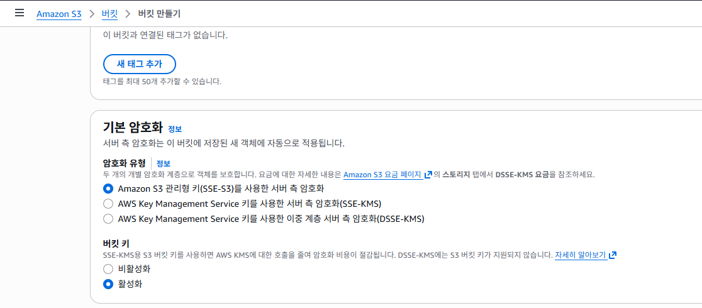

AWS Certified Cloud Practitioner (CLF-C02)
발표자: Winter
키보드 좌우 방향키로 이동하세요
"누가(Who) 무엇을(What) 할 수 있는가"를 제어하는 AWS 보안의 심장입니다.
Root User와 IAM User로 나뉨.
사용자들의 집합.
일시적인 권한 (EC2, Lambda 등).
계정 생성 시 만들어지는 슈퍼 관리자. 절대 일상적인 작업에 사용하지 말 것!
처음에 IAM User 하나 만들고, 로그아웃 후 봉인해야 함.
권한은 JSON 문서로 정의됩니다. "최소 권한의 원칙(Least Privilege)"을 기억하세요.
시험에는 무조건 3가지가 나옵니다. 영어 약자와 한글 의미를 꼭 기억하세요.
웹사이트 접속
"명령줄 인터페이스"
마우스 없이 검은 화면(터미널)에서 타자로 명령을 내리는 도구입니다.
"소프트웨어 개발 키트"
파이썬(Python), 자바(Java) 같은 프로그래밍 언어(코드) 안에서 AWS를 조작할 때 쓰는 도구 모음입니다.
※ CLI와 SDK는 같은 'Access Key'를 쓰기 때문에 설정 화면에서는 하나로 묶여 있습니다.
"비밀번호(아는 것) + 스마트폰(가진 것)" = 보안 2배
Google Authenticator로 스캔하세요.
"동기화(Sync)를 맞추기 위해서입니다!"
MFA 코드는 30초마다 바뀝니다. AWS 서버 시간과 내 핸드폰 시간이 정확히 맞는지 확인하기 위해, 연속된 두 개의 코드를 입력받아 확실하게 검증하는 것입니다.
💡 시험 팁: Root User는 무조건 MFA를 켜야 한다.
| 구분 | AWS KMS (Key Management Service) | AWS CloudHSM (Hardware Security Module) |
|---|---|---|
| 방식 | 멀티 테넌트 (Multi-tenant) 하나의 하드웨어를 여러 회사가 나눠 씀 (논리적 분리) |
싱글 테넌트 (Single-tenant) 나만 쓰는 전용 하드웨어 장비 |
| 특징 | 사용하기 쉽고, AWS 서비스들과 자동 연동됨. | 관리가 어렵고 비쌈. AWS 직원조차 접근 불가능. |
| 기업 예시 |
🏢 스타트업, 일반 기업 (당근마켓, 배민 등) "안전하면 되고 관리가 편한 게 좋아." |
🏦 금융권, 국방부, 정부 (은행, 군대) "법적으로 암호화 키가 전용 장비에만 있어야 해." |

발표 요약:
1. IAM: 최소 권한, Role 사용, Root 봉인
2. Access: CLI/SDK는 Access Key, 콘솔은 PW
3. Encryption: KMS(일반) vs HSM(전용)